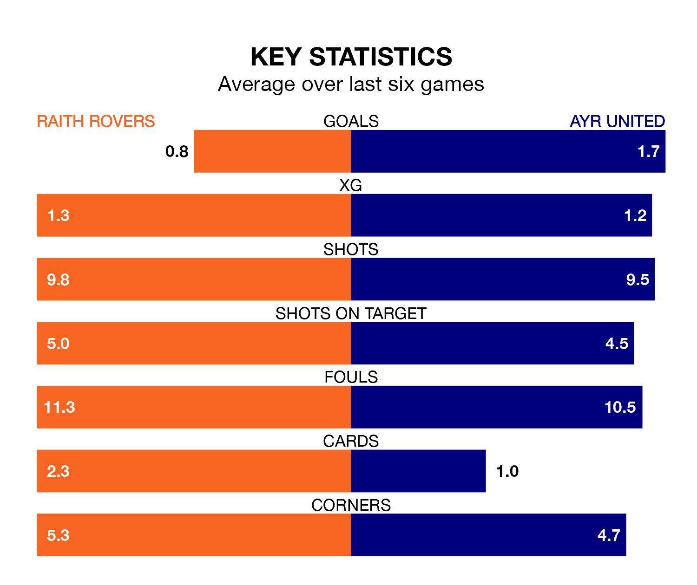

Raith Rovers host Ayr United in Saturday's match at Stark's Park looking to bounce back from defeat last time out in the Championship.
Raith, who sit second in the league after 30 games, fell to a 2-0 away defeat to Dundee United on March 30.
They face an Ayr side who picked up a win in their last match, a 2-1 victory against Airdrieonians, and who sit seventh in the table.
With 49 goals in 30 games so far this season, Raith are the league's third-highest scorers with 1.6 goals per game. And they are conceding fewer than average, letting in 38 goals at a rate of 1.3 per game.
Ayr, meanwhile, are average scorers, with 1.4 goals per game. They have conceded 1.8 goals per game.
In the last 10 years, Raith and Ayr have played each other on 22 occasions. Raith won eight of them, Ayr seven, and they drew seven times.
On average, Raith scored 1.1 goals and the Honest Men 1.4 in those matches.
Their last meeting was on February 24, when Raith won 2-1 away.
With Maciej Dabrowski between the sticks, Rovers can rely on one of the league's safest pair of hands. He has kept eight clean sheets in his 28 appearances this season, and only two other 'keepers – Dundee United's Jack Walton and Airdrieonians's Joshua Rae – have been able to prevent the opposition scoring on more occasions in the Championship.
In United's net, Charlie Albinson has four clean sheets in 18 games. He has conceded a goal every 59 minutes, 20% more often than the 72 minutes between goals for Dabrowski.
The home side are in mixed form in the Championship, with two wins and two draws from their last six games.
With three wins and three losses over that period, the Honest Men's form is slightly better – they have taken nine points from 18, compared to Raith's eight.
Updated: 10:31 (UTC), 31/03/24